Run button on the toolbar (or press Ctrl+F11). The current project is saved, built using the "Release" build configuration, and loaded into the appropriate emulator. A graphical phone is displayed.
Run button on the toolbar (or press Ctrl+F11). The current project is saved, built using the "Release" build configuration, and loaded into the appropriate emulator. A graphical phone is displayed.The MoSync IDE ships with a default emulator, MoRE, that can emulate most devices in MoSync's device/platform database and includes multitouch emulation. You can also use native emulators from the IDE, like the Android Emulator and iPhone/iOS Simulator, and run your application in those too.
The Android, iPhone/iOS, and Windows Phone emulators can all be installed and specified as the target emulator for Android, iOS, and Windows Phone applications. Once installed, you just need to select an Android, iOS, or Windows Phone platform profile before you run your application in the IDE. The appropriate native emulator will start automatically. For installation instructions, see Installing and Working with Native Emulators, below.
To start the MoSync emulator, click the Run button on the toolbar (or press Ctrl+F11). The current project is saved, built using the "Release" build configuration, and loaded into the appropriate emulator. A graphical phone is displayed.
(You can also start the emulator in debug mode by clicking the Debug button on the toolbar. In this case the current project is built using the "Debug" build configuration, before being loaded into the emulator.)
The MoSync emulator is the default emulator if no other native emulators are installed. It is controlled either by clicking the keys on the graphical phone, or using a number of keyboard shortcuts:
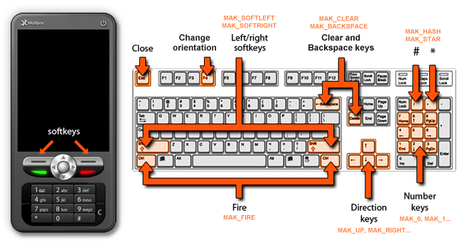
The MoSync emulator communicates with the MoSync IDE, sending call stacks, panics, and other useful data to the console window.
The F4 key on the keyboard toggles the screen orientation of the emulator between portrait and landscape modes (and causes an EVENT_TYPE_SCREEN_CHANGED to be sent to the application).
Right-click with the mouse pointer on the emulator screen to engage multitouch simulation. Two filled circles appear, equidistant and opposite from the screen's centre point:
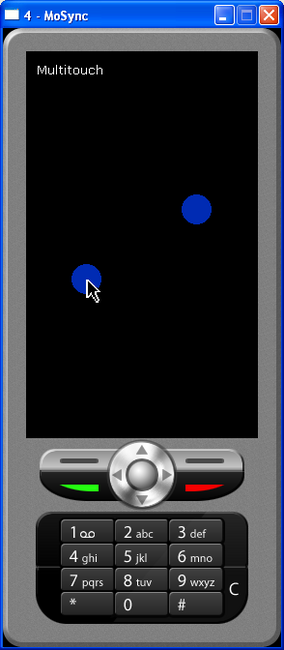
To emulate pinch-in, pinch-out, and rotational guestures, move the pointer in different directions while holding down the right mouse button
The Esc key closes the emulator.
The current profile being used by the emulator (and also the profile that your application will be built for when you click the Run button in the IDE) is shown in the IDE toolbar. Clicking that button opens the Select active profile window in which you can choose another profile:
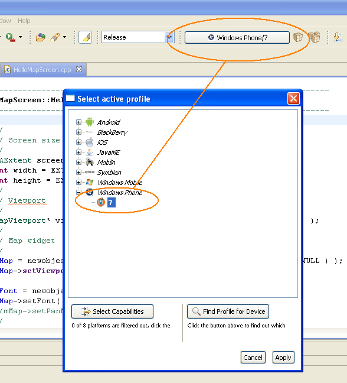
If your project is configured on a per device basis, then you need to select a specific device to build and test for. The device profile that the emulator currently uses is highlighted in the Device Profile list with an orange background. To make the emulator emulate another device, right-click on a device in the Device Profile view and select Set Target Phone.
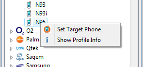
If you want to see more information about the device, select Show Profile Info from the right-click menu. You will then see the header file that MoSync will use when it builds the application for the emulator.
When you press the Run button on the toolbar, the MoSync IDE makes intelligent assumptions about how you want to run the application. For instance, if you’ve set the project profile to ‘Android’, it will start the app in the Android emulator. You can manually adjust this setting by clicking the small down-arrow next to the Run button in the toolbar, and selecting Run Configurations:
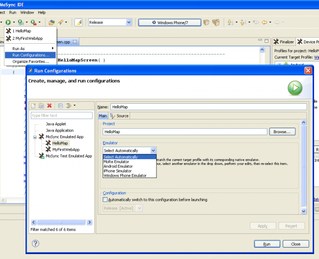
Here you can choose the emulator to use when running your project in the IDE (or let the MoSync SDK automatically select an emulator for you).
You can define profiles for running your application. Each profile can have a specific emulator assigned to it, or you can continue to use the automatic selection. This may just be a short cut for you to select a particular profile, but it has other options as well. For the MoSync emulator, you can specify the screen size to run at. For the Android emulator, you can specify which AVD to use:
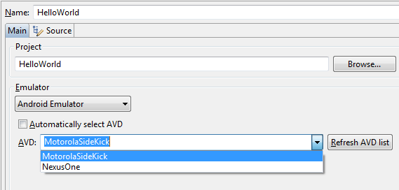
You can also choose a build configuration to always use:
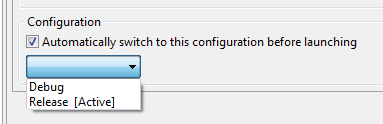
You can name and save your configuration:
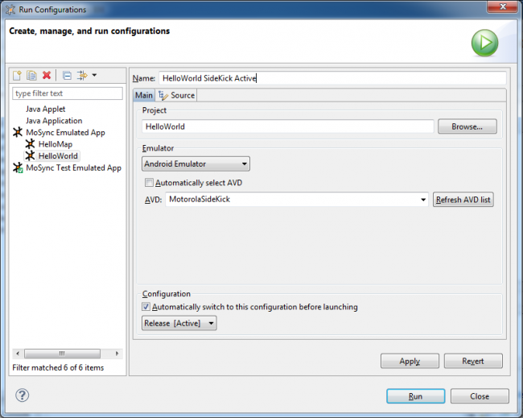
The Run button now shows your configuration as being the active, default configuration for this project:
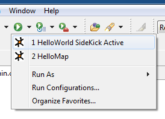
If you now select Organize Favorites... you can choose configuration profiles you want to see in the Run button:
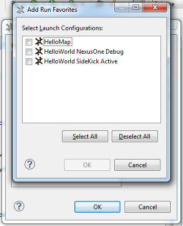
Check the ones you want, and press OK. You will then see them added to the list of favorites. Click OK again, and next time you press the Run drop down, you will see the profiles for you to run, even if that project is closed:
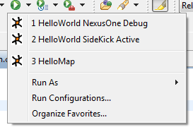
If you are debugging your application, there is a similar setting for Debug mode: click the small down-arrow next to the Debug button in the toolbar, and select Debug Configurations to see the settings.
When a MoSync application terminates because of a panic, the call stack is transmitted to the output console in the IDE: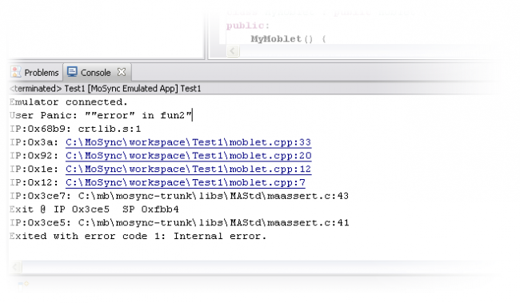The call stack shows you all the stack frames that were active when the application terminated, and you can click on each line to go to the corresponding source file and line. This is the format of such lines:
IP:<instruction pointer>: <path to source file>:<line number in source file>
If the panic involved MoSync libraries that you do not have the source code to, those lines will not be clickable.
When you build your project for the emulator, the progress of the build will be displayed in the Console and includes information about the success of the toolchain invocations, the build paths, and so on. If you build your project successfully, these results will be replaced at the end of the build process by a new Console view showing the output from your application. If you want to examine the build results, you can switch the Console view using the Display Selected Console selector on the Console toolbar: 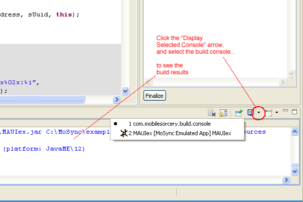
If you would like to run your application in the Android Emulator, iPhone/iOS Simulator or Windows Phone Emulator you will need to install and configure those emulators in the appropriate environment. Once you have done this, when you select an Android or iPhone/iOS device profile and start the emulator, your application will run in the appropriate emulator. On both Windows and Mac OS X you can always use MoSync's MoRE Emulator.
To be able to use the iPhone Simulator from the MoSync SDK you need to install the MoSync SDK for OS X and the iPhone SDK including Xcode 4 on an Apple Mac.
To be able to use the Android Emulator from the MoSync SDK, you need to install the the Android SDK and a platform to emulate. You also need to install the MoSync SDK for OS X on an Apple Mac or the MoSync SDK for Windows on a Windows machine.
To be able to use the Windows Phone Emulator, you need to install the MSync SDK for Windows on a Windows machine and the Windows Phone 7 SDK from Microsoft (including Microsoft Visual Studio 2010 Express).
It is important to note that the Windows Phone Emulator requires Windows Vista or Windows 7 and a graphics card that supports DirectX 10 or DirectX 11 with WDDM 1.1 or later and DDI 10 or later.
 Run button.
Run button.Important! Those of you who are already familiar with the Android Emulator will know that it can take a long time -- and we mean a really long time -- to start. Time enough, indeed for you to make lunch, or even dinner. Nothing to do with us. Talk to Mr Google.